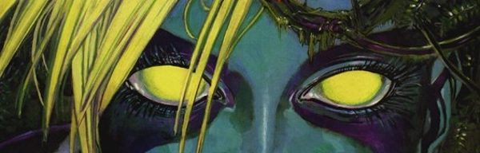

The first female GI in the world of Rogue Trooper: the "G.I. dolls" were written in initially as non-combatants. Venus was a core character in "From Hell to Eternity" (a bit like South Pacific crossed with Misery), where she murders the other survivors of a crash to save herself, reasoning that she is more worthy than a normal human. This aspect of the character is subsequently ignored, where Venus is either a hawt mental projection (during The Hit sequence), or just a warrior, without any clearly defined character arc.
In the convoluted world of Rogue Trooper continuity, Venus crosses over into the Fr1day reboot series when it gets retconned into the original universe.
Art by Henry Flint
| Story Title | Parts | Pages | w indicates a wraparound coverCovers | Year(s) | Issues | Writer | Artist | Colourist | Letterer |
|---|---|---|---|---|---|---|---|---|---|
From Rogue TrooperMilli-Com Memories | 5 | 22 | 0 | 1983 | 318-322 | Gerry Finley-Day | Cam Kennedy | [b&w] | Bill Nuttall |
From Rogue TrooperFrom Hell to Eternity | 6 | 26 | 0 | 1983 | 335-340 | Gerry Finley-Day | Brett Ewins | [b&w] | Bill Nuttall |
From Rogue Trooper Venus appears as a mental projection.[The Hit Man] | 5 | 26 | 0 | 1986 | 495-499 | Simon Geller Steve MacManusvarious | Steve Dillon | [b&w] | Gordon Robson |
From Rogue Trooper Venus appears as a mental projection.Hit One | 12 | 62 | 0 | 1987 | 520-531 | Simon Geller | Steve Dillon | [b&w] | Gordon Robson |
From Rogue Trooper Venus appears as a mental projection.The Legend | 1 | 2 | 0 | 1988 | 567 | unknown | Steve Dillon | [b&w] | Gordon Robson |
From Rogue Trooper Venus appears as a mental projection.[Hit Two] | 5 | 27 | 568: Steve Dillon 1 | 1988 | 568-572 | Simon Geller | Steve Dillon | [b&w] | Gordon Robson |
| The Pleasures of the Flesh | 1 | 7 | 0 | 1988 | Reprints: SFS18SFS11 | Grant Morrison | Will Simpson | <-- | Gordon Robson |
From Rogue Trooper Venus appears as a mental projection.Hit Four: The New Moral Army | 5 | 31 | 598: Steve Dillon 602: John Higgins 2 | 1988 | 598-600, 602-603 | Simon Geller | Steve Dillon | [b&w] | Tom Frame |
From Rogue Trooper Venus appears as part of a fever dream.Nu Earth Flashback: Cinnabar | 10 | 52 | 0 | 1989 | Reprints: M4.16‑M4.18 X15 624-630, 633-635 | John Smith | Steve Dillon (P) Kevin Walker (I)various | [b&w] | Gordon Robson |
From Rogue Trooper [Fr1day]Blue on Blue | 4 | 24 | 930: Edmund Perryman 1 | 1995 | 928-931 | Steve White | 1‑3: Henry Flint 4: Nick Abadzis, Edmund Perryman, Steve White various | <-- | Ellie de Ville |
From Rogue Trooper [Fr1day]Mindbombs | 3 | 18 | 938: Dougie Braithwaite 1 | 1995 | 937-939 | Steve White | 1‑2: Nick Abadzis, Edmund Perryman, Steve White 3: Steve Tappin various | <-- | Bunty Mayhew |
From Rogue Trooper [Fr1day]Ascent | 4 | 24 | 946: Steve Tappin 949: Steve Tappin 2 | 1995 | 946-949 | Steve White | Steve Tappin | <-- | Annie Parkhouse |
| Bitchin' | 1 | 8 | 0 | 1995 | WS7 | Steve White | Simon Coleby | [b&w] | Bunty Mayhew |
| Venus on the Frag Shell | 4 | + 1 credit pages24 | 976: Cliff Robinson 979: Jason Brashill 2 | 1996 | Reprints: M318 (supplement)976-979 | Dan Abnett | Simon Coleby | Gina Hart: 1‑2 Dondie Cox: 3‑4 various | Ellie de Ville |
| Stealth | 3 | + 1 credit pages18 | 982: Henry Flint 1 | 1996 | Reprints: M318 (supplement)980-982 | Steve White | Henry Flint | <-- | Ellie de Ville |
From Rogue Trooper [Fr1day]Hot Metal | 4 | + 1 credit pages24 | 983: Steve Tappin 1 | 1996 | 983-986 | Steve White | Henry Flint: 1 Steve Tappin: 2‑4 various | <-- | Bunty Mayhew |
| Genesis | 1 | 6 | 0 | 1996 | RTAS | Dan Abnett | Cliff Robinson | Alan Craddock | Gordon Robson |
From Rogue Trooper [Fr1day] No supertitle.Rogue Troopers | 9 | + 1 credit pages54 | 1015: Mark Harrison 1022: Greg Staples 2 | 1996 | 1014-1022 | Dan Abnett Steve Whitevarious | Alex Ronald | Dondie Cox | Annie Parkhouse |
From HuntedFuries | 10 | 50 | 2035: Richard Elson 1 | 2017 | 2034-2043 | Gordon Rennie | PJ Holden | Len O'Grady | Ellie de Ville |
| Threat Level: Zero | 1 | 10 | 0 | 2020 | Reprints: 2KRC22206R | Liam Johnson | Aneke | Barbara Nosenzo | Simon Bowland |
| >> Posters << | |||||||||
Star Pin‑Up.Venus Bluegenes | 1 | 1 | 0 | 1984 | 353 | n/a | Brett Ewins | <-- | n/a |
From Rogue Trooper Star Scan.[Rogue & Venus] | 1 | 1 | 0 | 1988 | 607 | n/a | Braithwaite | <-- | n/a |
Star Scan.Venus Bluegenes | 1 | 1 | 0 | 1996 | 977 | n/a | Jason Brashill | <-- | n/a |
Star Scan.[Venus Bluegenes] | 1 | 1 | 0 | 1997 | 1032 | n/a | Lol | <-- | n/a |
| >> Features << | |||||||||
From Rogue Trooper [Fr1day] Venus Bluegenes.2000AD Design Sketches | 1 | 1 | 0 | 1997 | 1028 | n/a | Greg Staples | <-- | n/a |
From [Features] | Miscellaneous Cosplay.Union City Blue | 1 | 2 | 0 | 1997 | 1039 | editorial | Photography.Steve Cook | <-- | n/a |
Linked to Durham Red Cosplay.Venus Takes Oxford | 1 | 1 | 0 | 1997 | 1042 | Dan Abnett | Model: Claire Smithies Costumes: Emma Storey Make‑up: Zarrina Haq Photography: Steve Cook various | n/a | n/a |
From Durham Red Cosplay.Durham Bites Back | 1 | 1 | 0 | 1997 | 1044 | Dan Abnett | Model: Luisa Morando Costumes: Emma Storey Make‑up: Zarrina Haq Photography: Steve Cook various | n/a | n/a |
| year | episodes | pages |
| 1981 | 0 | 0 |
| 1982 | 0 | 0 |
| 1983 | 11 | 48 |
| 1984 | 0 | 0 |
| 1985 | 0 | 0 |
| 1986 | 5 | 26 |
| 1987 | 12 | 62 |
| 1988 | 12 | 67 |
| 1989 | 10 | 52 |
| 1990 | 0 | 0 |
| 1991 | 0 | 0 |
| 1992 | 0 | 0 |
| 1993 | 0 | 0 |
| 1994 | 0 | 0 |
| 1995 | 12 | 74 |
| 1996 | 21 | 126 |
| 1997 | 0 | 0 |
| 1998 | 0 | 0 |
| 1999 | 0 | 0 |
| 2000 | 0 | 0 |
| 2001 | 0 | 0 |
| 2002 | 0 | 0 |
| 2003 | 0 | 0 |
| 2004 | 0 | 0 |
| 2005 | 0 | 0 |
| 2006 | 0 | 0 |
| 2007 | 0 | 0 |
| 2008 | 0 | 0 |
| 2009 | 0 | 0 |
| 2010 | 0 | 0 |
| 2011 | 0 | 0 |
| 2012 | 0 | 0 |
| 2013 | 0 | 0 |
| 2014 | 0 | 0 |
| 2015 | 0 | 0 |
| 2016 | 0 | 0 |
| 2017 | 10 | 50 |
| 2018 | 0 | 0 |
| 2019 | 0 | 0 |
| 2020 | 1 | 10 |
| 2021 | 0 | 0 |
| 2022 | 0 | 0 |
Comic strip data (excludes other content):